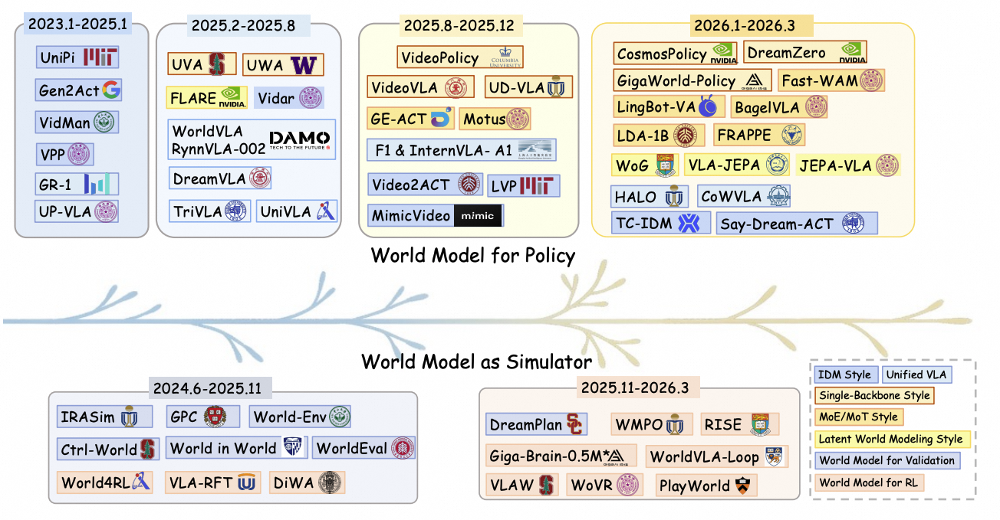
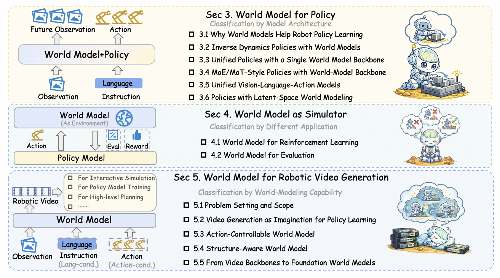
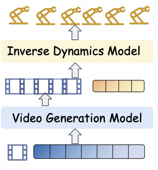
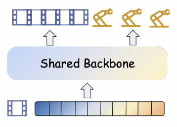
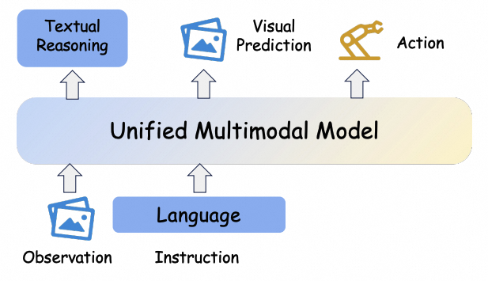
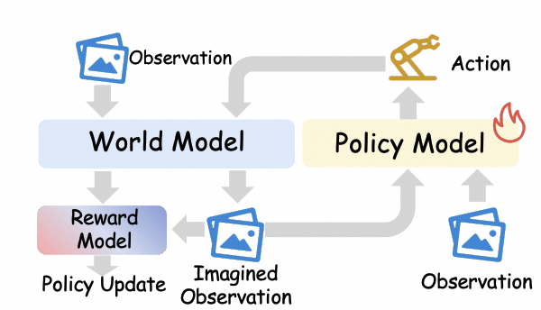
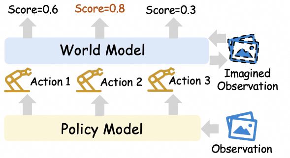
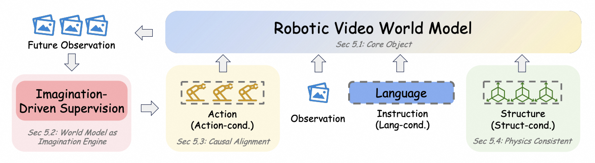
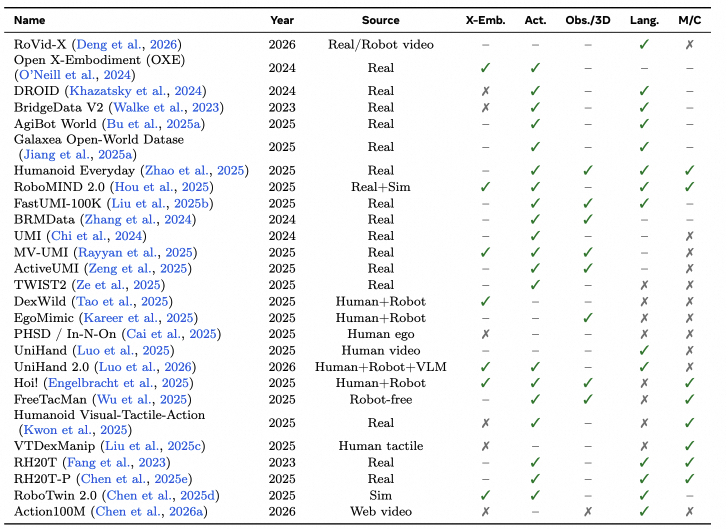
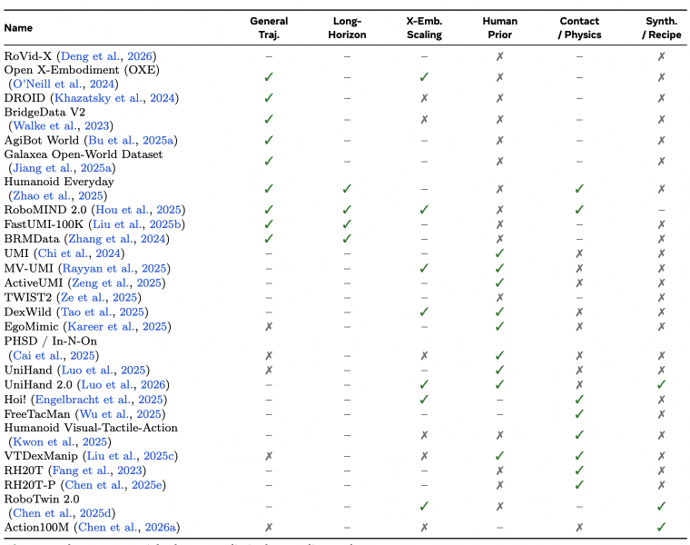

01
World Model for Policy
Architectural paradigms for coupling predictive future modeling with action generation.
A policy-centric survey of predictive world models for robot policy learning, planning, simulation, evaluation, data generation, and robotic video generation.
Abstract
World models are predictive representations of how environments evolve under actions. In robot learning, they support policy learning, planning, simulation, evaluation, and data generation. This survey reviews how world models are coupled with robot policies, how they serve as learned simulators, and how robotic video world models progress toward controllable, structured, and foundation-scale formulations.
Architectural paradigms for coupling predictive future modeling with action generation.
Learned environments for reinforcement learning, validation, and decision-time evaluation.
Video-based future prediction for imagination, controllable rollout, and data amplification.
Timeline
The timeline is updated through March 31, 2026, and will be continuously maintained.
Recent world-model-based robot learning has progressed along two connected tracks: world models become increasingly integrated with policy generation, while learned simulators move from validation and ranking toward reinforcement learning, post-training, and co-evolving optimization.

Overview

Taxonomy
The survey separates how predictive generation interacts with action production, ranging from modular predict-then-act pipelines to tightly integrated end-to-end and latent-space formulations.

A world model predicts future observations, then an inverse-dynamics-style policy recovers actions.
DecoupledPredict then act
Future visual evolution and actions are modeled jointly inside one shared generative backbone.
Shared backboneVideo-action
Specialized video, action, and language experts interact through fusion or shared attention.
Expert fusionJoint attention
Future-oriented prediction is internalized inside a multimodal VLA policy through visual foresight or structured world knowledge.
VLAForesightWorld knowledge
Future prediction is represented in compact latent space, reducing the need for explicit pixel-level decoding.
Latent dynamicsJEPA-styleEfficient controlWorld Model as Simulator
The survey also treats world models as learned environments. In this view, a world model can generate imagined transitions for policy improvement, or roll out candidate actions to validate, rank, and evaluate likely outcomes before execution.

The world model serves as a learned simulator that produces imagined observations, rewards, and termination signals for policy updates.
Imagined rolloutsPolicy updatePost-training
The world model evaluates candidate actions by predicting their consequences, enabling decision-time validation, ranking, and rollout-based scoring.
Action rankingValidationRollout scoringRobotic Video Generation
Beyond policy coupling and simulator-style usage, the survey also reviews video-based world models by their modeling capability: from imagination-based generation for policy learning to action-controllable, structure-aware, and foundation-scale formulations.

Video generation synthesizes future task executions and expands supervision for downstream control.
Generated futures are conditioned on robot actions, making rollouts useful for planning and evaluation.
Models incorporate object, geometry, contact, or physical structure to improve action-relevant prediction.
Large-scale video backbones are adapted into reusable predictive substrates for embodied agents.
Resources
For a compact homepage summary, we highlight two dataset/resource tables from the survey: core data attributes and relevance to embodied world-modeling capabilities.


X-Emb.: cross-embodiment coverage. Act.: explicit action supervision or aligned action proxy. Obs./3D: strong observation support beyond basic monocular RGB, e.g., multi-view, depth, LiDAR, or 3D annotations. Lang.: language/task conditioning. M/C: multimodal or contact-rich signals such as force, tactile, audio, or dense proprioceptive/contact cues. ✓ denotes strong support, – denotes partial/moderate support, and ✗ denotes limited or no support.
Open Challenges
Predicted futures should reflect the consequences of candidate robot actions, not only visual plausibility.
Embodied tasks require stable rollouts and reliable planning under compounding prediction errors.
Video-action diffusion and rollout-based reasoning must become lightweight enough for practical control loops.
Object-centric, relational, symbolic, and latent states may be more useful than pixels for planning and control.
Benchmarks should measure functional utility for robot learning, not only future-frame realism.
Citation
@article{hou2026worldmodelrobotlearning,
title = {World Model for Robot Learning: A Comprehensive Survey},
author = {Hou, Bohan and Li, Gen and Jia, Jindou and An, Tuo and Guo, Xinying and Leng, Sicong and Geng, Haoran and Ze, Yanjie and Harada, Tatsuya and Torr, Philip and Mees, Oier and Pollefeys, Marc and Liu, Zhuang and Wu, Jiajun and Abbeel, Pieter and Malik, Jitendra and Du, Yilun and Yang, Jianfei},
year = {2026},
note = {Project page placeholder}
}